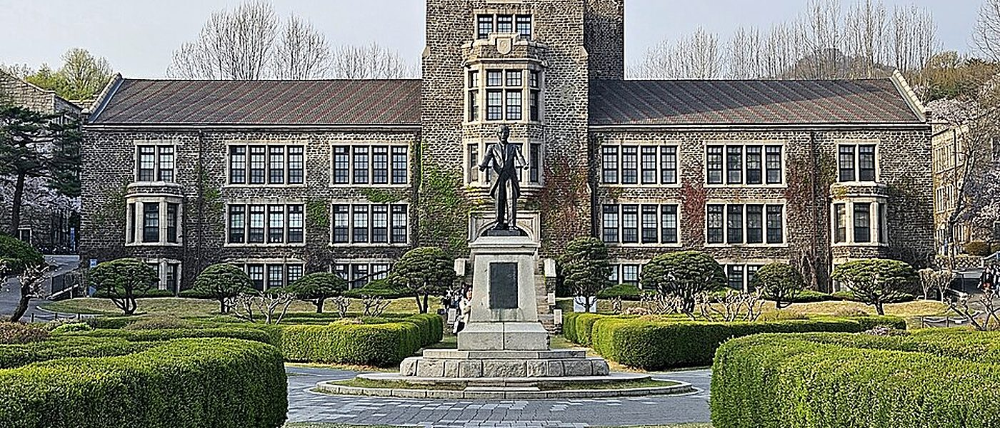
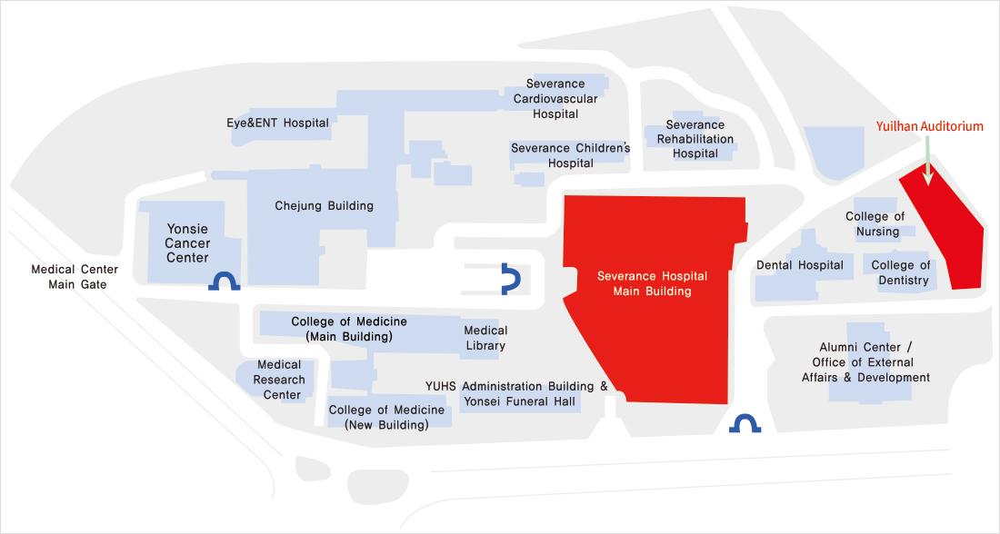

Surgical Anatomy Education Center
Yonsei University College of Medicine
50-1 Yonsei-ro, Seodaemun-gu, Seoul 03722, Korea
The dissection room is beside the College of Medicine building, inside the Severance Hospital campus on the Sinchon campus. Lectures are held in the seminar room of the same building.
외과해부교육센터
연세대학교 의과대학
서울 서대문구 연세로 50-1 (03722)
해부 실습실은 신촌캠퍼스 세브란스병원 안 의과대학 건물 옆에 있습니다. 강의는 같은 건물 세미나실에서 진행됩니다.

By subway
Line 2 Sinchon Station, Exit 1 · 15-minute walk
Line 3 Dongnimmun Station, Exit 4 · Maeul (village) bus 8, 8-1 · 5 minutes
By bus
Bus stop: in front of Severance Hospital.
Blue (main) 163, 171, 270, 272, 370, 470, 472, 601, 606, 700, 750, 751
Green (branch) 6714, 7014, 7017, 7020, 7712, 7015, 8-1, 8
Red (wide area) 9600, 9601, 9602, 9606, 9708, 9713
From Incheon International Airport
About 60 minutes by airport limousine bus (stop: Severance Hospital / Sinchon) or taxi. By rail, take the Airport Railroad (AREX) to Hongik University Station and change to Line 2 for Sinchon, about 70 minutes.
Navigation apps
Google Maps gives limited walking and driving directions in Korea. Naver Map or KakaoMap are recommended; both have English menus.
지하철
2호선 신촌역 1번 출구 · 도보 15분
3호선 독립문역 4번 출구 · 마을버스 8, 8-1번 · 5분
버스
정류장: 세브란스병원 앞
간선 163, 171, 270, 272, 370, 470, 472, 601, 606, 700, 750, 751
지선 6714, 7014, 7017, 7020, 7712, 7015, 8-1, 8
광역 9600, 9601, 9602, 9606, 9708, 9713
인천국제공항에서
공항 리무진 버스(세브란스병원/신촌 정류장) 또는 택시로 약 60분. 공항철도로 홍대입구역에서 2호선으로 갈아타 신촌역까지 약 70분.
지도 앱
구글 지도는 국내에서 도보·차량 길찾기가 제한됩니다. 네이버 지도나 카카오맵을 권장하며, 두 앱 모두 영어 메뉴를 지원합니다.